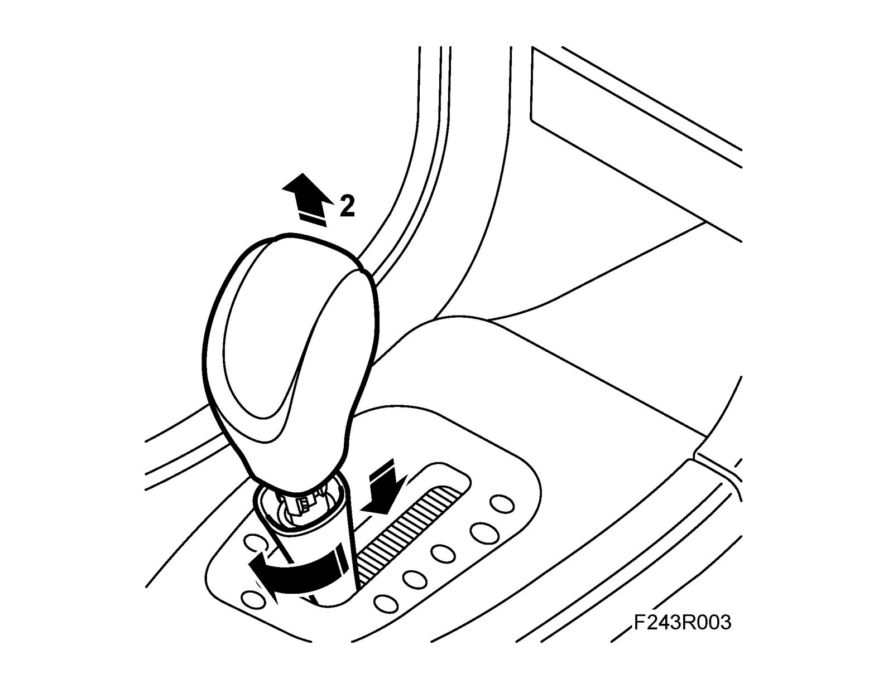
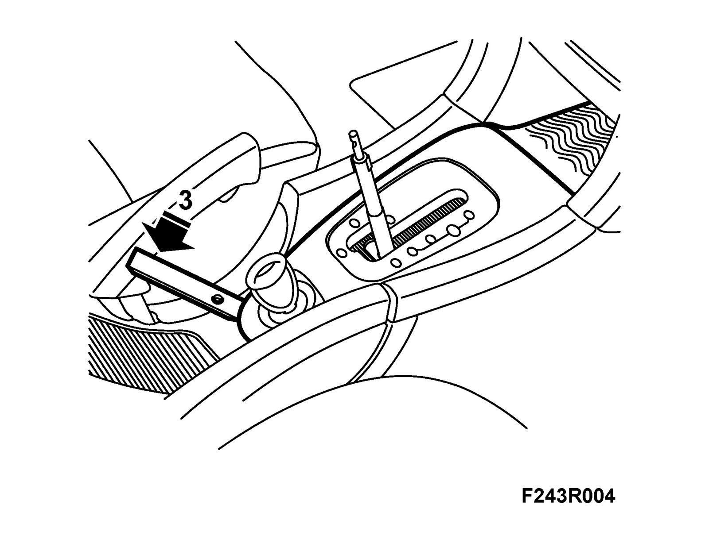
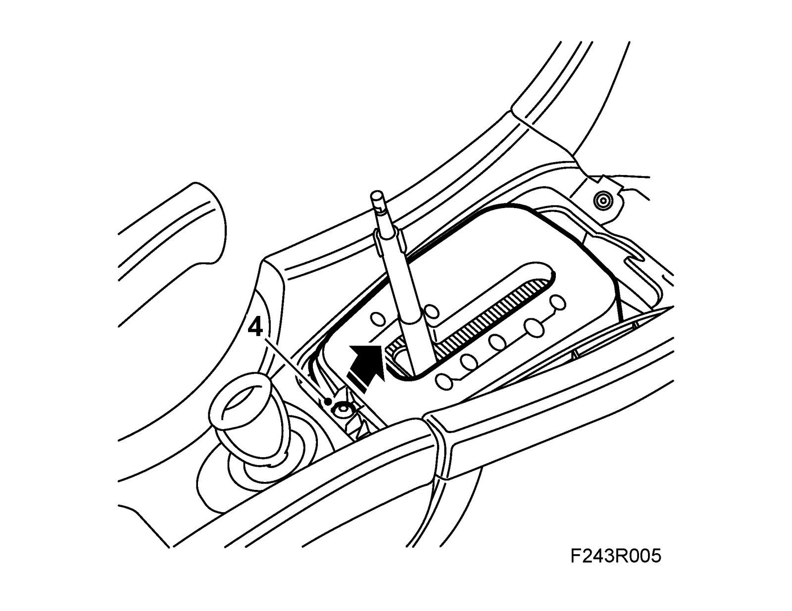
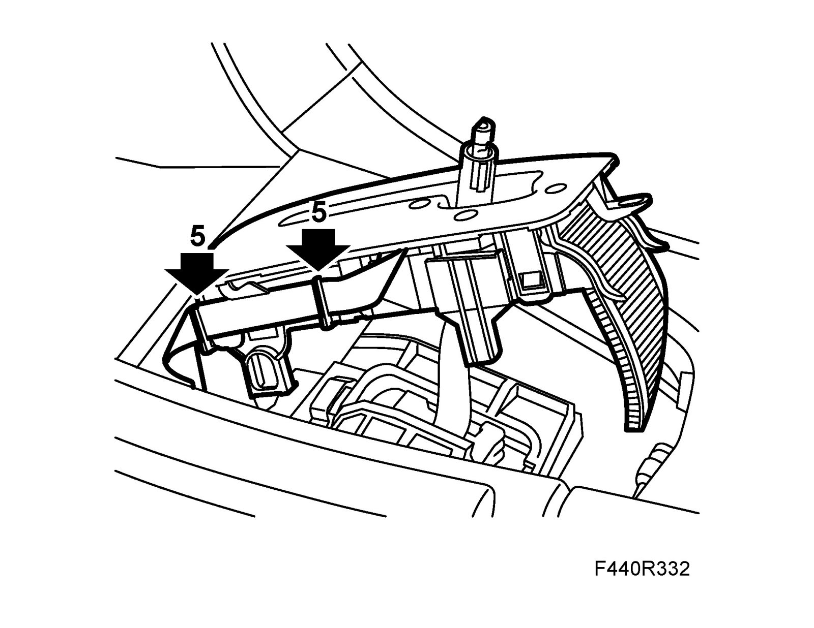
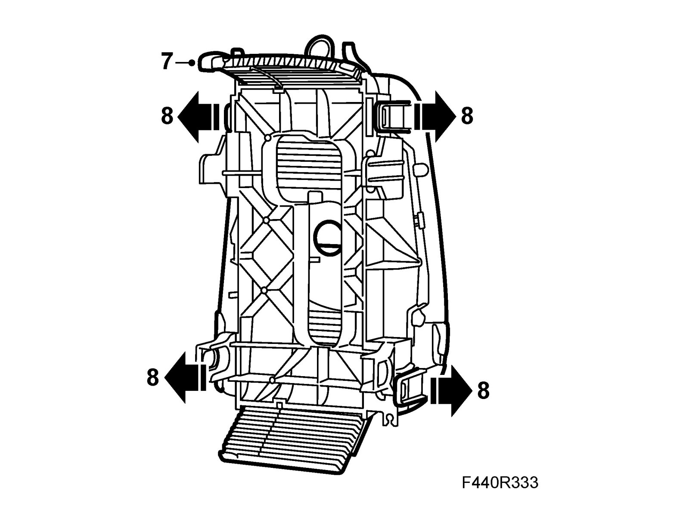
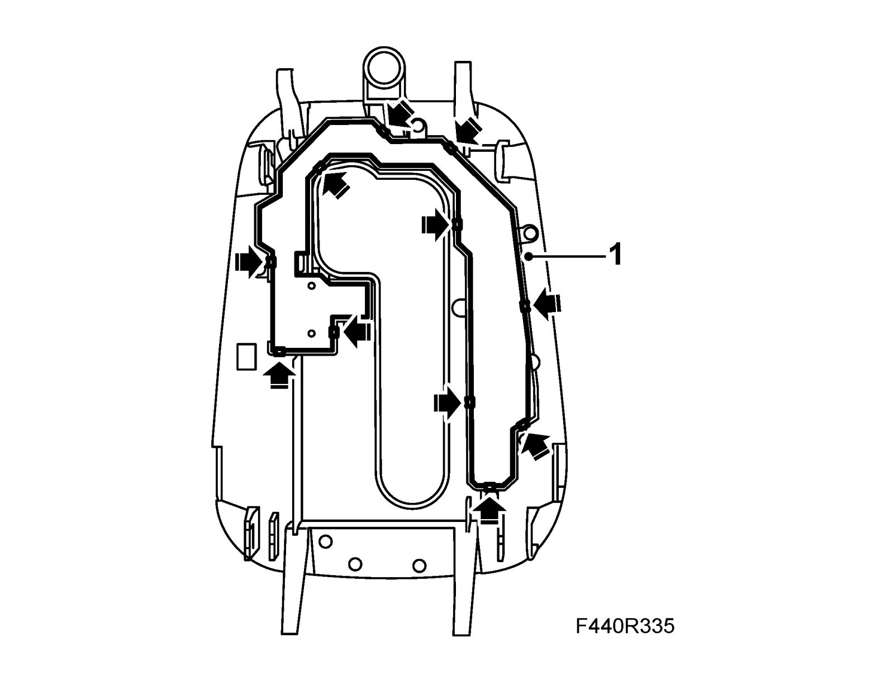
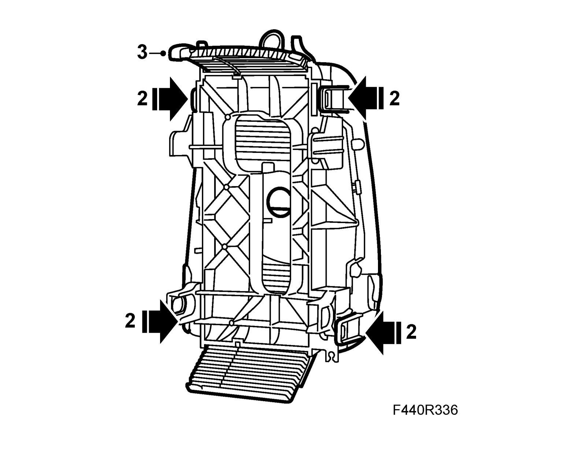
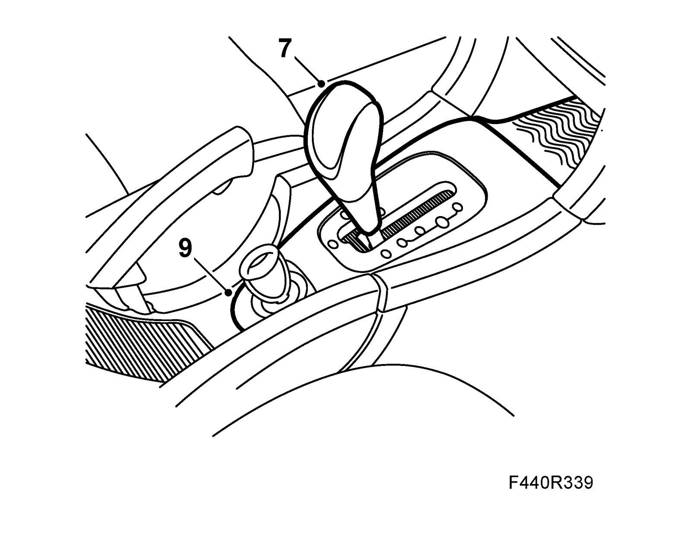

Gear Position Panel, Cover
Gear position panel, coverTo remove
1. Engage D with the selector lever.
2. Turn the locking sleeve slightly clockwise and press down. Hold in the release button on the selector lever and pull up the knob. Lift up the locking sleeve.

3. Carefully pry up the outer panel with 82 93 474 Removal tool as illustrated.

4. Remove the panel holder by undoing the screw, lift and pull back on the panel holder.

5. Release the side catch on the inner panel and detach the ribbon cable from the holder.

6. Lift the panel over the gear selector lever.
7. Pull out the cover strip from the panel housing.

8. Remove the panel housing from the cover.
9. Carefully remove the gear position indicator from the cover.
To fit
1. Fit the gear position indicator on the cover.

2. Fit the panel housing on the cover.

3. Fit the cover strip into the panel housing.
4. Lay the panel over the gear lever and attach the ribbon cable to the cable holder.
5. Press the panel onto the catches and fit the panel holder and the screw.
6. Lubricate the hole in the upper part of the pull rod plus the hose on the gear selector lever with a light coating of Vaseline.
7. Fit the locking sleeve on the gear selector lever. Move the gear selector to position D. Hold in the release button and press the selector lever knob into place. Move the lever to N so that the release button springs out.

8. Fit the locking sleeve to the gear lever knob in a manner similar to its removal. Press the hose of the selector lever up toward the locking sleeve to hide any kinks in the hose.
9. Fit the outer panel.
10. Check that the different gear positions can be engaged.